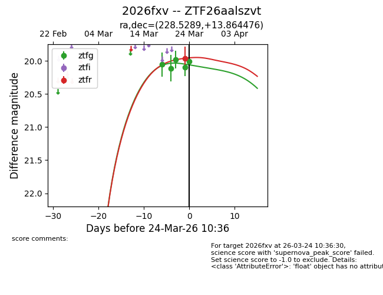
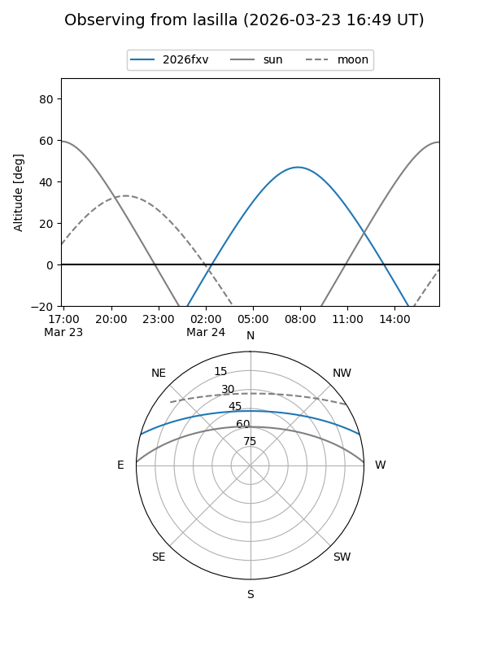
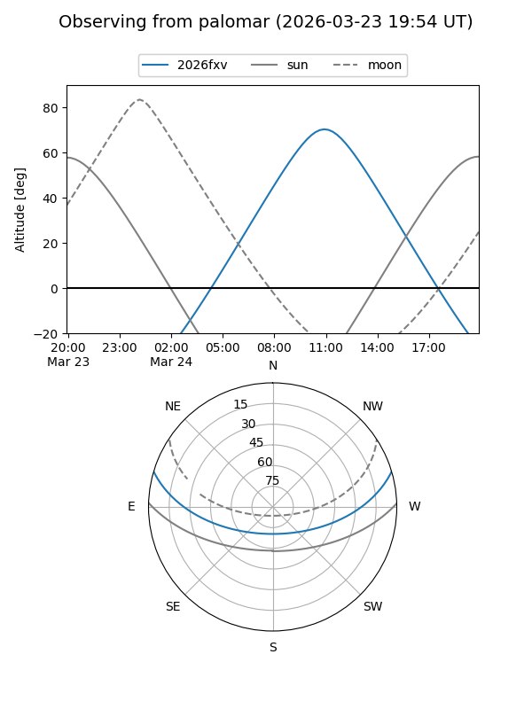
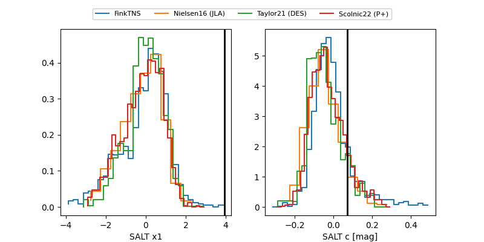

2026fxv
Target 2026fxv at 2026-03-24 10:39
Aliases and brokers:
FINK: link
Lasair: link
ALeRCE: link
TNS: link
YSE: link
alt names
ZTF26aalszvt (ztf,fink_ztf)
2026fxv (tns,yse)
Coordinates:
equatorial (ra, dec) = 228.5289,+13.86448
equatorial (HMS+DMS) = 15:14:06.93,+13:51:52.11
galactic (l, b) = (18.4344,+54.21555)
Flags:
Photometry:
last ztfg=20.00, ztfr=19.96
5 ztfg, 1 ztfr detections
Lightcurve

Visibility


Additional plots
